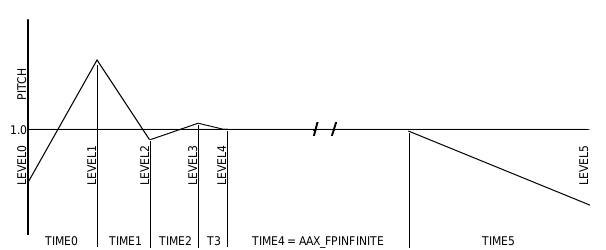

This effect can alter the Timbre of a looping sound buffer by adjusting the pitch using a predefined Pitch Envelope.
The Effect may have up to 6 stages.
Switching to the first Level is instant, switching to the next levels is smooth.
The pitch remains unchanged during one refresh period. Because of this slow pitch changes might provide better results.
Time steps can not be smaller than the refresh period (defaults to 22 milliseconds per period).
There is no pitch level that will stop the emitter automatically
Time parameters define the time (in seconds) relative to the previous stage.
Set the Time parameter to AAX_FPINFINITE for the looped sustain period.
Set the last Time parameter to zero if less than 6 stages are required.
Level parameters range between 0.0 and 4.0.
High values allow for a clearer attack (and/or release) period.
The Timed Pitch effect is supported by Emitters.

Timed Pitch Effect parameters
The effect uses up to three effect slots.
AAX_TIMED_PITCH_EFFECT
STEREO
Slot 0
p0
AAX_LEVEL0
p1
AAX_TIME0
p2
AAX_LEVEL1
p3
AAX_TIME1
Slot 1
p0
AAX_LEVEL2
p1
AAX_TIME2
p2
AAX_LEVEL3
p3
AAX_TIME3
Slot 2
p0
AAX_LEVEL4
p1
AAX_TIME4
p2
AAX_LEVEL5
p3
AAX_TIME5
Timed Pitch Effect state options
Specify true to enable the timed pitch effect or false to disable it.
Starting with AeonWave version 3.6.0 adding AAX_ENVELOPE_FOLLOW to the state will make the pitch-changes logarithmic.